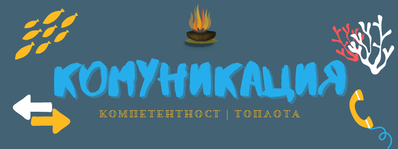

Комуникация на работното място
Ако трябваше вместо да си сътрудничим с хора, само да им предаваме необходимата информация или списък със задачи, нямаше да е толкова трудно.
Но в добавка обикновено дори без да искаме:
- - изтъкваме социален или йерархичен статус,
- - сигнализираме колко държим да подобряваме или напротив да оставяме нещата каквито са
- - или доколко може да разчитат на нас.
Така въпросът за уважението се наслагва над простото предаване на информация или инструкции.
Дори при професионалното общуване, колкото и нечестно да звучи печелят не най- добрите идеи, а най- убедителните истории.
Това се дължи на факта, че за да постигнем каквото и да било, ни трябва време. Време, през което да може да разчитаме на ресурси и подкрепа без които проекта ни ще се провали със сигурност.
Така че за да работим по задачите, които сме убедени, че ще ни доведат до успех в бъдеще трябва да си осигурим подкрепата на замесените страни, било то колеги, шефове или подчинени, а ако работим за себе си- на клиенти, сътрудници и инвеститори.
Затова трябва ясно и вдъхновяващо да изложим визията си.
Но при все това вниманието, което може да ни отделят е ограничено.
Затова винаги трябва да правим компромиси в комуникацията си и най- вече да решаваме как да разрешим напрежението между топлотата и компетентността, която демонстрираме.
Какво имам предвид?
ТОПЛОТА или как да покажем, че ни е грижа
Когато работим заедно с някой по даден проект, за да можем да разчитаме на най- добрите им усилия или поведение, е нужно и те да вярват, че няма да ги подведем и да ги оставим да се оправят както могат.
Ако някой е недоволен, че изисквате прекалено, не е необходимо да намалявате стандарта си.
Решението е, вместо да намалите взискателността си, да подсилите дружелюбността си.
Така уверявате отсрещаната страна, че въпреки че работата е предизвикателна ще може да се справите заедно. Естествено, когато правите това трябва да сте готови да подкрепите думите си с действия.
Но си заслужава. Знаете, че чувството за добре свършена работа с помощта на добронамерен и трудолюбив другар е много удовлетворително и изпълнено с значение. Когато въпреки умората може да се усмихнеш и да си кажеш “Добре оползотворен ден!”
Тогава как да намерите такъв ответ и да дадете сигнал, че във вас може да намерят такъв човек.
- - Първо дайте контекст. Например като кажете нещо подобно: “Този проект е съществен и си заслужава да му дадем приоритет поради следните причини:... Затова ще се наложи…”.
- - Изтъкнете, че процесът (извършваните стъпки) също е важен независимо от резултата, защото дори да положите всички усилия, успехът не е гарантиран. Но дори провалите може да имат положителни страни.
- - Изтъкнете пречките, които стоя на пътя ви, но също защо ще може да ги преодолеете заедно.
- - Покажете отношение, за може отстрещната страна да се чувства оценена. Например, ако това не е първата ви съвместна работа, припомнете им, че досега сте постигали резултати с общи усилия: “Досега сме работили успешно и приятно…”
- - Питайте от какво имат нужда от вас: често подминаваме прекалено лесните или очевидни помощни решения, както ни се струва, а малко усилие от ваша страна може да спести доста мъки на някой друг. Например вие може да имате информация, умение или поглед отгоре, които биха били полезни на другите. Вместо да се върши два пъти едно и също, предоставете им необходимите ресурси, за които се сетите, без да се налага да ви питат.
- - Установете правила предварително, за да няма разочаровани независимо от това, което се случи и най- важното спазвайте ги: ако два проекта се борят за ограничен бюджет например и е казано, че ще се ползва даден критерий да се направи избора, не го променяйте.
- - Бъдете пример: ако трябва да се свърши нещо неприятно или да се остане до по- късно инцидентно, дори и да не може да помогнете много, не оставяйте останалите да се мъчат сами- моралната подкрепа също е важна.
КОМПЕТЕНТНОСТ или как да покажем, че можем да се справим
Ако обаче обръщате прекалено внимание на чуждите чувства и постоянно се страхувате да не ги обидите или да ги помолите да свършат своята част от работата, може да сметнат, че няма нужда да си правят труда. Дори може толерантността и доброто ви отношение да се изтълкуват като мекушавост или дори неспособност да се справите с предстоящата задача.
Ако не ви изслушват или искате да подсилите авторитета си, спазавайте тези правила:
- - Колкото повече търсите одобрение, толкова е по- малък шанса да го получите. Не се дискредитирайте сами (“Може и да греша…”), оставете на другите да преценят дали идеите ви им се струват удачни. Вашата задача е да ги изложите ясно и с вяра.
- - Бъдете винаги учтиви, но преминете директно на въпроса.
- - За жалост, по- малко хора оценяват нюанса, а повечето предпочитат смели изказвания дори да се окажат грешни. Така че доколкото е възможно се откажете от думи като “до известна степен”, “горе- долу” или “или нещо подобно”. Използвайте прости и конкретни думи.
- - Дори да сте ядосани или наранени, защото идеите ви не са получили одобрението, което заслужават, не показвайте тези емоции. Не си струва, запазете доброто си настроение. Бъдете готови да се засмеете или да промените някой част според нуждите на слушателите дори да знаете, че другият вариант ще е по- добър. Всеки преценява за себе си.
- - Изслушвайте внимателно критиките. Ако не са релевантни, не се засягайте, а задълбайте откъде може да идва въпросът. Понякога, заради някакви предварително оформени представи, които може да не са верни, хората задават въпроси, които ни се струват странни или нелогични. Обяснете спокойно.
- - Ако ви прекъснат, не се обиждайте, а обяснете, че ще засегнете тази точка по- нататък или че не сте довършили мисълта си. Стига да не е злонамерена, послужете си с шега, която ви идва наум.
Ако това не помогне, имайте предвид, че на някои колеги им е изгодно да не ви разберат. Може примерно да не искат да навредят на репутацията си като признаят, че досегашните им действия не са разумни. Или пък може да пазят важна информация от страх за позицията си. Или, ако се борите за едно и също повишение, може да им е изгодно да омаловажават постиженията ви, дори да е несъзнателно.
На това му се вика “офисна политика”. Тъй като сме хора, в офиса под повърхността има куп неща в допълнение към способността ни да си вършим конкретните задачи, които са пред нас. Няма как да оставим човешката си страна вкъщи.
Но понякога проблемът не е в намеренията, а става дума за недоразбиране.
ЯСНОТА
Нерядко представата в нашата глава не отговаря на тази в чуждата. Когато се колебаем, е добре да попитаме как би изглеждала успешно изпълнена задача: кое да приоритизираме, как би се приело дадено решение и така нататък.
А ако сте от другата страна, посочете ясно какво очаквате от отсрещната страна- понякога ни се струва, че е очевидно, но не е. Също така обяснете защо трябва да се свърши точно сега и защо молите точно този човек.
Постаряйте се да давате максимално специфични инструкции: срокове, очаквани резултати или документи; ако трябва да се консултират с друг отдел кажете им имената на човека към когото да се обърнат, а не поста.
Документирайте взетите решения и по възможност изпратите имейл след срещата или разговора с главните точки и варианти, на които сте се спряли. Предимствата на този подход е, че всички са наясно и не трябва да разчитат на паметта си. А ако не дай си боже се получи засечка имате всичко черно на бяло.
Имайте предвид, че е препоръчително една тема да отговаря на един имейл, тоест ако работите по повече задачи, пратете отделни съобщения. Така ако се наложи получателя може да препрати информацията на трета заинтересована страна направо.
Oформете го да е лесно за четене:
- - отделете отделен параграф за отделната идея;
- - сложете подзаглавия ако трябва;
- - подчертайте важни думи;
- - когато изброявате, ползвайте подточки;
- - включете графики (скрийншот, инфографика или диаграма) или приложете презентация.
Освен ако не си общувате със специалист като вас или някой, с който си имате често приказка по дадената тема, избягвайте жаргона.
Също така, редувайте къси и дълги изречения, за да се получи някакъв ритъм- ако ви е скучно да го пишете, ще е скучно и за четене.
Премахнете излишните думи и известни факти, а вместо това добавете изненадващи факти или още по- добре статистически данни (за още по- голям ефект, ги повтаряйте като проценти и числа) за да може получателя или публиката да си направят сами изводите.
Подбирайте внимателно думите си- как ще наречете нещо (или някого) ще определи как ще се отнасят към него: например сайта ви има ли потребители, читатели или клиенти? планът ви спасителен ли е или за растеж?
Споделете мисловния процес довел до вашата препоръка за да може вместо да отхвърлят нацяло идеята ви да се получи разговор. За това помага също да задавате повече отворени въпроси, тоест такива на които не се отговаря с “да” или “не”. Понякога ни се струва, че няма място за нюанси, но светът е по- сложен отколкото си мислим.
Имейлът е най- често използвания канал в момента, но по възможност, когато общувате с някой изберете неговия предпочитан метод: чат, видео или телефонно обаждане или пък ако имате възможност на живо. Ако се съобразявате със стила на общуване на отсрещната страна, има по- голям шанс да ви чуят. А лошата комуникация води до повече работа.
Поменете, че срещите са последната ви опция, когато другите канали не са достатъчни.
Ако става дума за нещо по- съществено, преди да си определите време за обсъждане, пратете някои основни точки, за да може човекът да ги обмисли и да е съвещанието ви по- ползотворно. Изискването на незабавни отговори често води до лоши и прибързани решения.
Ако ви притискат, поставете ясни граници: кога е хубаво да ви пишат (в работно време), колко поправки сте готови да направите, какво става ако има наистина спешни въпроси.
Ако нещо ви притеснява, по възможност говорете директно със засегнатата страна, а не чрез посредници. По веригата се губи информация, но най- вече отношението.
В ежедневието си извършваме комуникация най- вече с две различни групи: с клиенти и с колеги.
Постарайте се нагласата ви и двата случая да е максимално подобна. Например, не бъдете любезни с клиенти в един момент, а в следващия да говорите лошо зад гърба им. Първо, това често се усеща, дори да си мислите, че сте ги излъгали, но също не е благотворно за душата ви. Ако се държат неподобаващо, обяснете го и поставете ясни граници. Понякога не го правят нарочно, а поради липса на такт или незнание.
И обратното, не се дразнете на колеги, че не се стресират до краен предел само и само да покажат перфектно лице пред клиенти или партньори. Проявете разбиране- най- доброто обслужване е когато всеки дава много от себе си, но когато се налага може да покаже, че е необходимо допълнително търпение или време. Оставете си марж за непредвидени обстоятелства.
НЕДОРАЗУМЕНИЯ
Може да си мислим, че сме непредубедени и безпристрастни, но винаги и навсякъде, възприятнията ни водят до тълкувания, които не се основават единствено на пряко видяното.
Затова не прибързвайте с заключенията.
Ако някой е раздразнителен, не е задължително да е свързано с вас- в ежедневието ни има куп възможни източници на напрежение, а може и просто да са гладни.
А дори и да ви се изясни къде се крие точно проблема, решението, за което вие си мислите може да не е същото, което има предвид отсрещната страна.
Например, ако някой каже “Тук е задушно” може да иска да се отвори прозореца, да се включи климатика или да излезете заедно навън.
Когато се колебаете, проверете- изчакайте да получите повече информация в хода на разговора или просто питайте.
Хубаво е да имате поне няколко улики, за да сте сигурни.
При общуването има различни слоеве. Често от нас се изисква да чуваме и неизказаното.
Ползата да избираме обяснението, което приема, че другите са добронамерени, освен ако нямаме солидни доказателства за обратното, е неописуема.
Вижте и съветите ми за писането на имейли.